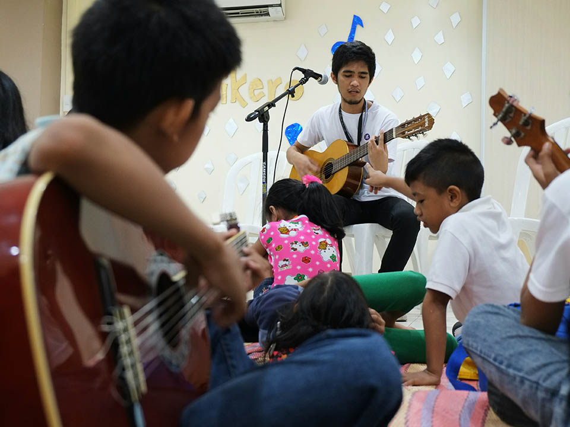

Musikero is an organization that is composed of Ateneans who share a passion in music and teaching others how to play instruments.
What is Musikero and what do we do?
Musikero primarily deals with teaching members from our partner community how to play different instruments consisting of guitar, ukelele, etc.
Why should people join Musikero?
Musikero welcomes any individual who experiences a deep passion for music and community. Through our weekly areas, you will be given the opportunity to share this passion with others by teaching the members of our partner community how to play certain instruments. Whether you are already proficient in teaching an instrument or at the very least are willing to learn how to teach an instrument, Musikero will feel just like home.

Vision
Musikero envisions a community wherein music is a catalyst for establishing a sense of self-esteem and identity among the youth.
Mission
Through Musikero’s area visits and other advocacy projects, we aim to empower the youth and develop their character by teaching, sharing, and appreciating music with our partner communities
 Passionately made by User Experience Society
Passionately made by User Experience Society